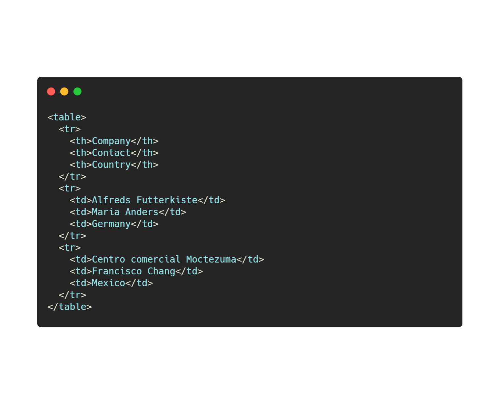

O nás
Už od zavedení tabulek do HTML v roce 1997 jsme hlasití odpůrci této kacířské, nevěřícné, Hospodinu-uráživé technologie. Tabulky ignorují technologický posun vůči mobilním zařízením, a stále fungují správně pouze pro desktopová zařízení, bez hrozně otravných @media queries. Use grid for fuck's sake. Nikdo nemá rád tabulky. Moje babička nemá ráda tabulky. Můj pes by ani nezaštěkal na tabulky, protože jsou tak na nic.
Samotnou existenci tabulek považujeme jako výsměch technologii Grid/Flex. Není žádný racionální důvod pro existenci tabulek, kromě známkování zbytečných stránek ve škole.